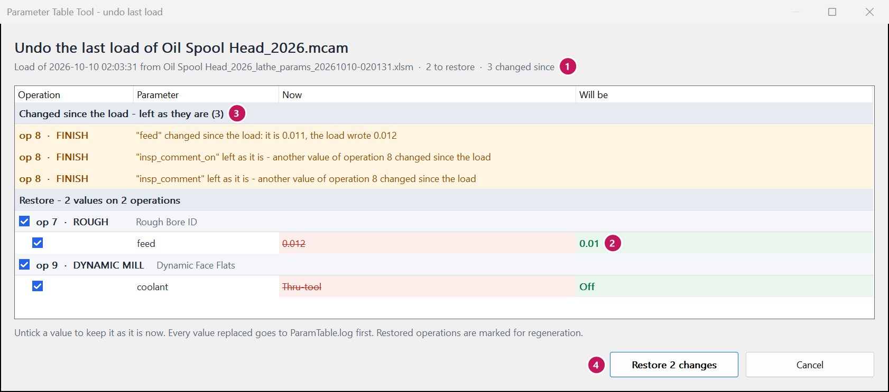

Undo a load
Mastercam: Lathe params - undo last load
What this is for
It takes the last load of this part back. The old values come from ParamTable.log, a file the load
writes beside the part before it changes anything. You see the same kind of preview window as the load, with tick boxes,
before anything is written.
This is the undo for the part in Mastercam. For an undo inside Excel, see Undo.
When to use it
After a load, when the result is not what you wanted: the backplot looks wrong, the program posts badly, or the operator says the new feed chatters. It is its own command so it is there later – long after the load window has closed.
Steps
- Open the part in Mastercam (the same saved part file the load went into).
- Click Lathe params - undo last load.
- Read the window. Restore lists each value it will put back. Changed since the load lists values you changed by hand after the load – those are left alone.
- Untick anything you want to keep as it is now.
- Click Restore (e.g. Restore 2 changes).
- Regenerate the restored ops, then save the part.


Worked example
You loaded feed 0.012 into ops 7 and 8. After the load you also changed op 8's feed by hand in Mastercam to 0.011. Now the bore chatters and you want the old feeds back.
| Op | Before the load | Now | Undo does | After undo |
|---|---|---|---|---|
| 7 feed | 0.01 | 0.012 | Restore | 0.01 |
| 8 feed | 0.01 | 0.011 | Changed since the load – left alone | 0.011 |
Run it a second time and it does nothing: the values are already back.
The undo goes into the part's history. An undo of the whole load takes that load's saving back off the Saved so far total; an undo of only part of it leaves the saving counted, and says so.